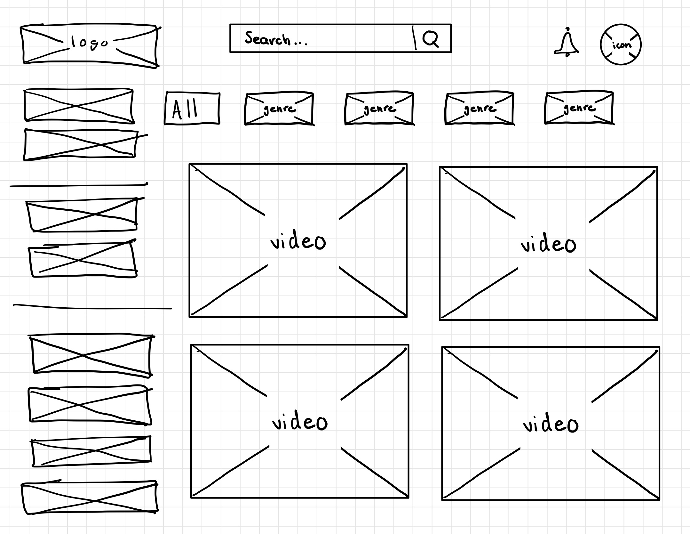
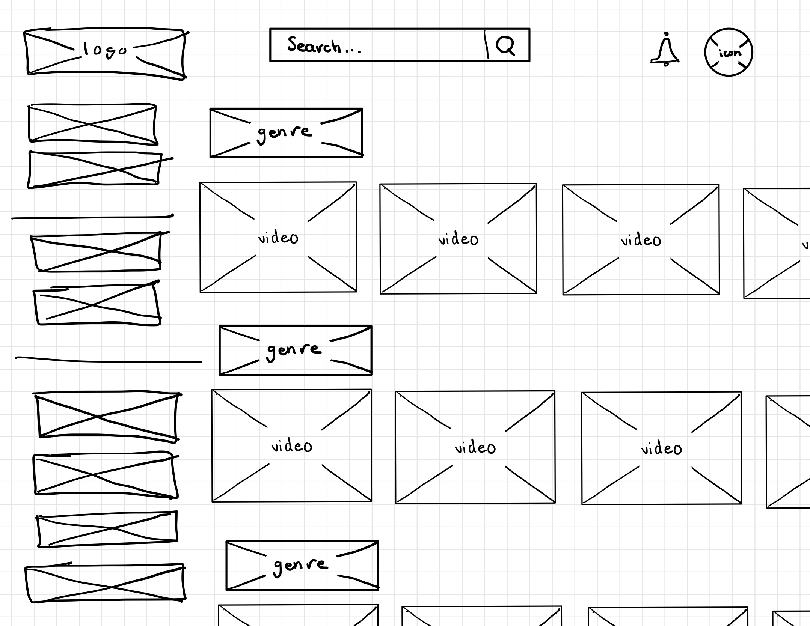

-
Using the favorite website you chose in homework 1, create a wireframe for one page of it using pen/paper, PowerPoint, or any your tool of choice. (use the 'img' tag!) Make sure to let us know what the name of your website is (Use the 'p' tag!)
I made a wireframe of YouTube. It was not my original website, but the one I had chosen was not suited the best for a wireframe.
-
Try to improve the website you've chosen, and create a redesigned wireframe of one page for the same website using the principles of visual hierarchy that you learned from the article.

-
What is the goal of the website? Who is it intended for? How does the design accomplish this? Write 2-3 sentences answering these questions. (Use the 'p' tag again!)
The goal of the website is to diplay videos for millions of users worldwide. The design accomplishes this by making videos the forefront of the homepage. Instantly when you load the website, you are presented with 4 videos that should interest you, given the success of the youtube algorithm in place. The attention of the user is caught instantly, and with just a single click they can begin watching whatever video interested them the most
-
Write 2-3 sentences about what problems your redesign addressed, and how it solved them.
I would like to preface by saying youtube is a really well designed website as it is, so I could not find much to 'fix'. Instead, I just made some design changes. instead of displaying 4 large videos on the screen at once I opted to instead remove the genres below the search bar, and create a row for each genre. Then, in each genre row, there will be plenty of videos to select from and the idea is that as you scroll to the right more and more, there will me infinitely more and more videos. I chose to do this so that the user will have a greater variety of videos to choose from.
NOTE: Make sure to include the wireframe images in the website and don't just put it in your assets folder!
Your wireframes should look something like this: